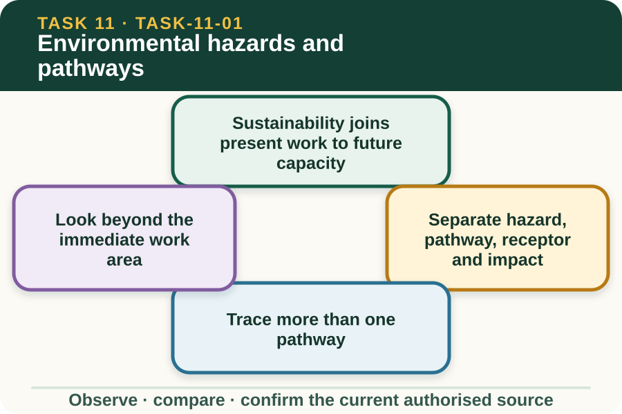
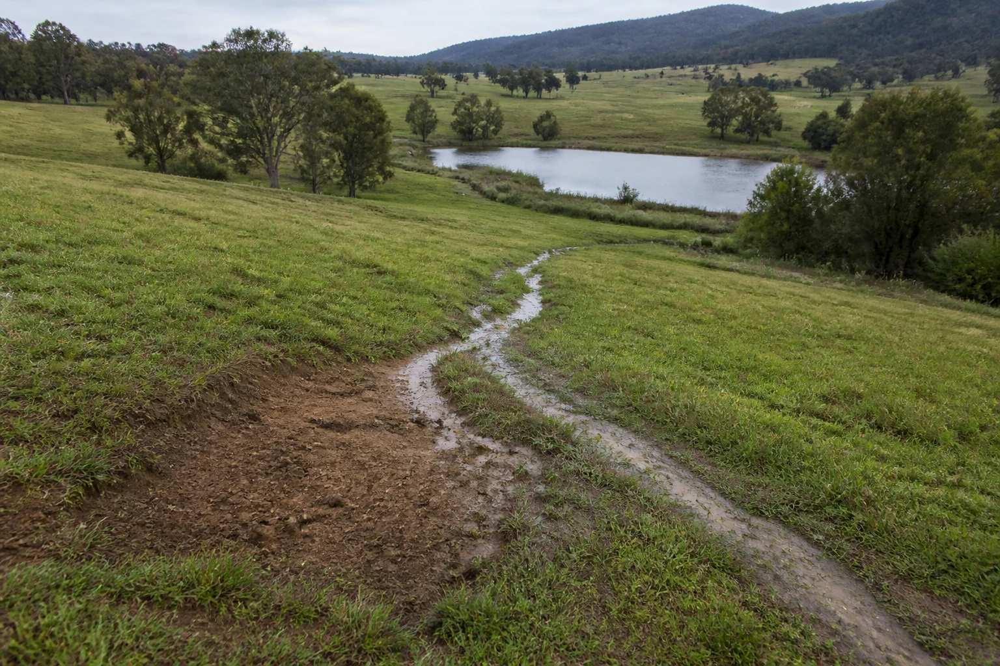
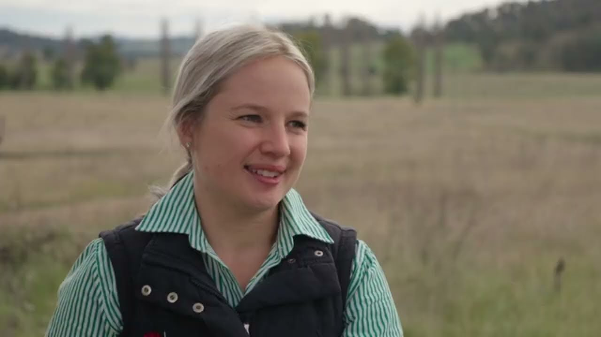

Learning purpose
Trace how a work activity can affect soil, water, air, habitat and neighbouring land.
Task 11 · Lesson 1 of 4
Trace how a work activity can affect soil, water, air, habitat and neighbouring land.
Learning purpose
Trace how a work activity can affect soil, water, air, habitat and neighbouring land.
Success criteria
Learning boundary
Supplementary learning and formative practice only. Current RTO assessment, local procedures and authorised supervision control real work.

Environmentally sustainable work aims to meet present needs while protecting the systems and resources needed later. In primary industries, productive land, healthy water, functioning habitat, reliable inputs and community trust are connected rather than separate goals.
A learner contributes by following current procedures, noticing environmental hazards, measuring resources accurately, reporting concerns and suggesting improvements within their work role. They do not invent a property response or legal decision.

An environmental hazard is a source or situation with potential to cause harm. A pathway is how the source could move or act, a receptor is what could be affected, and an impact is the change that may result.
This structure prevents vague claims. Loose soil beside a drain is the source condition, stormwater is a possible pathway, the waterway is a receptor and increased sediment is a possible impact; each link needs evidence rather than assumption.
Water can carry sediment or contaminants downslope, wind can move dust or light material, vehicles and animals can transfer soil or organisms, and noise or light can affect neighbours and wildlife. A single source may have several pathways depending on the site and weather.
Mapping alternatives helps the supervisor choose an authorised control. It does not authorise the learner to enter a hazard area, handle unknown material or change drainage, soil or habitat features.
Environmental receptors may include topsoil, surface water, groundwater, air quality, vegetation, wildlife habitat, livestock, crops and neighbouring land. Some are not visible from the task location, so the current property plan and supervisor knowledge are important.
Public learning maps should use fictional zones and protect real property, neighbour and ecological information. All real environmental records stay securely in the authorised workplace system.
Fictional worked example
Observed evidence: On 16 May 2027, a fictional training map shows a stockpile of fine soil uphill from a shallow flow path, with rain forecast in the saved class scenario and a dam marked downslope. Decision and reason: Ben identifies a possible soil–runoff–dam pathway but does not claim that contamination has occurred or redesign the site. Safe action: He reports the location, visible condition, map relationship and source time to the supervisor. Result: The supervisor checks the current property plan and confirms the authorised work response. Next check or record: Ben records the observation, receptor and confirmed control owner, then notes the later inspection result without inventing environmental measurements.
A work area can become higher risk when rain, wind, traffic, damaged containment, changed ground cover or a new nearby activity alters the pathway. Environmental checks therefore continue during work rather than ending with the initial plan.
When conditions differ from the brief, describe what changed and pause at the current workplace hold point. The supervisor decides what response is permitted using authorised property and regulatory sources.
A useful environmental report states time, location, observable condition, possible pathway and receptor, present task status and person notified. It separates what was seen from a diagnosis, legal conclusion or claim about who caused it.
Early reporting supports prevention and learning. The website response is practice only; it does not replace the workplace record, regulator contact process or RTO assessment.

External media loads only after you choose it.
Source-linked video
Why watch: Trace an environmental pathway through a real Australian farm-dam example.
Watch for: Trace one pathway by which runoff could carry a farm-work impact into water or habitat.
Formative practice
Each option explains the consequence. These answers save only on this device.
Written application
Apply and keep a learning record
Annotate a teacher-provided privacy-safe farm scene with two source–pathway–receptor chains, one changed condition and one supervisor referral. Do not propose a local response procedure.
Learning record: A supplementary-learning environmental pathway map with evidence and uncertainty clearly separated.
Lesson responses and the activity are formative learning only. Formal sufficiency and competence remain with the current RTO process.
Source basis: AHCWRK211 Release 1 requirements to identify and report environmental hazards and follow workplace practices, plus the NESA Sustainability focus area and authorised teacher-posted sustainability notes. Local response and notification remain controlled.